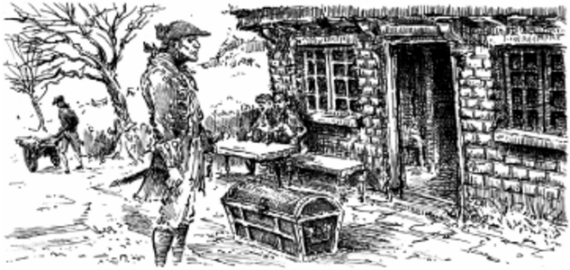
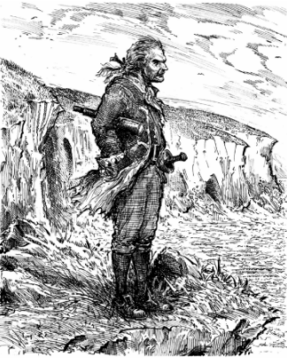

1
The Old Seaman
Squire Trelawney, Dr Livesey, and the others have asked me to write down all I know about Treasure Island. My name is Jim Hawkins, and I was in the story right from the start, back in 17-. I was only a boy then, and it all begun at the time my father owned the Admiral Benbow inn, at Black Hill Cove. I remember so clearly the day when the old seaman came to stay – I can almost see him in front of me as I write.
He arrived with his sea-chest, a tall, strong man with a cut across one cheek. He sang that old song as he walked up to the inn door:
Fifteen men on the dead mas’s chest –
Yo-ho-ho, and a bottle of rum!
The old seaman called for a glass of rum, and stood outside, drinking and looking around. Our inn was on the cliffs above Black Hill Cove, and was a wild, lonely place. But the seaman seemed to like it.
"Do many people come here?" he asked.
‘No,’ my father told him.
‘Then it’s the place for me,’ said the seaman. ’I’ll stay here for a bit. You can call me Captain.’ He threw down three or four gold coins. ‘Tell me when I’ve spent all that.’
He was a silent man. All day he walked around the cove, or up on the cliffs; all evening he sat in a corner of the room, and drank rum and water. He only spoke to our other customers when he was drunk. Then he told them terrible stories of his wild and criminal life at sea. Our customers were mostly quiet, farming people; the captain frightened them and they soon learned to leave him alone.
Every day, he asked if any seamen had gone along the road. At first we thought he wanted friends of his own kind, but then we began to understand that there was a different reason. He told me to watch for a seaman with one leg and to let him know the moment when a man like that appeared. He promised to give me a silver coin every month for doing this. I dreamed about this one-legged seaman for many nights afterwards.
The captain stayed week after week, month after month. His gold coins where soon used up, but my father was a sick man and afraid to ask for more.
Dr Livesey came late one afternoon. After he had seen my father, he had dinner with my mother, then stayed to smoke his pipe. I noticed the difference between the doctor with his white hair and pleasant way of speaking, and that dirty, heavy, red-faced seaman, drunk with rum.
The captain began to sing his song:
Fifteen men on the dead man’s chest –
Yo-ho-ho, and a bottle of rum!
Drink and the devil had killed off the rest –
Yo-ho-ho and a bottle of rum!
Dr Livesey did not like the song. He looked up angrily before he went on talking to old Taylor, the gardener. Others in the room took no notice of the song. The captain beat the table with his hand for silence. The voices in the room died away, all except Dr Livesey’s. The doctor continued to speak.
The captain swore softly, then said, ‘Silence!’
‘Are you speaking to me, sir?’ asked the doctor.
‘Yes,’ the captain told him, swearing again.
‘I have only one thing to say to you, sir,’ replied the doctor. ‘If you keep on drinking rum, the world will soon be free of a dirty scoundrel!’
The captain jumped to his feet with a knife in his hand, but the doctor never moved. He spoke to the captain in a calm and clear voice so that others in the room could hear:
‘If you don't put that knife away, I promise you shall die a criminal’s death under the law.’
Then followed a battle of looks between them, but the captain soon put away his weapon and sat down like a beaten dog. Soon after, Dr Livesey rode away in his horse. The captain was silent for the rest of the evening, and for many evenings afterwards.
Next Chapter